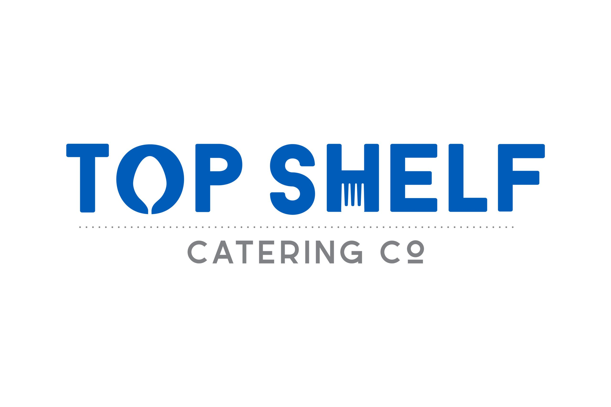
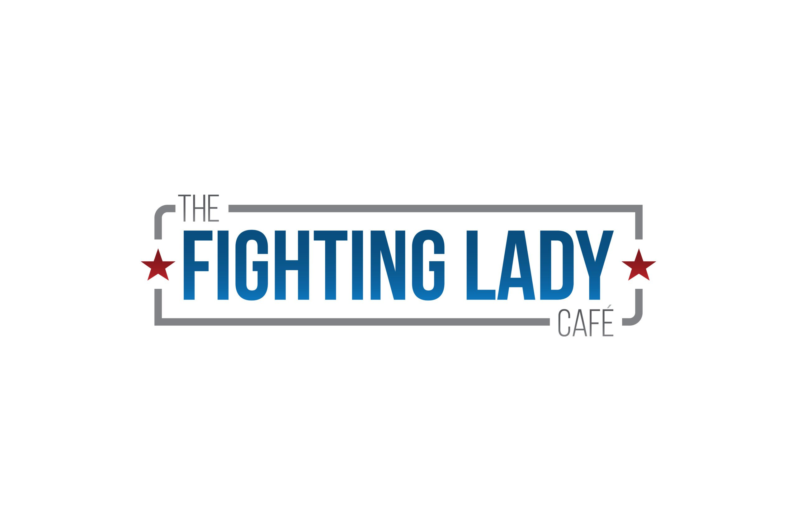
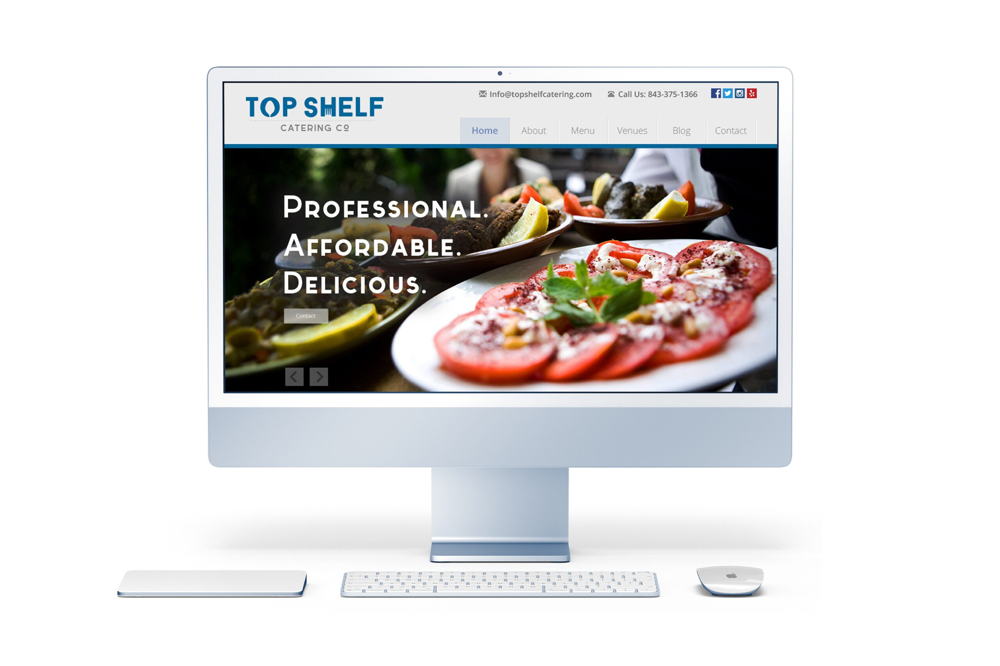
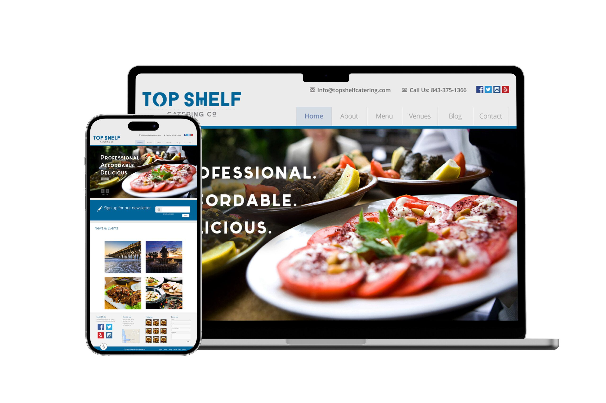
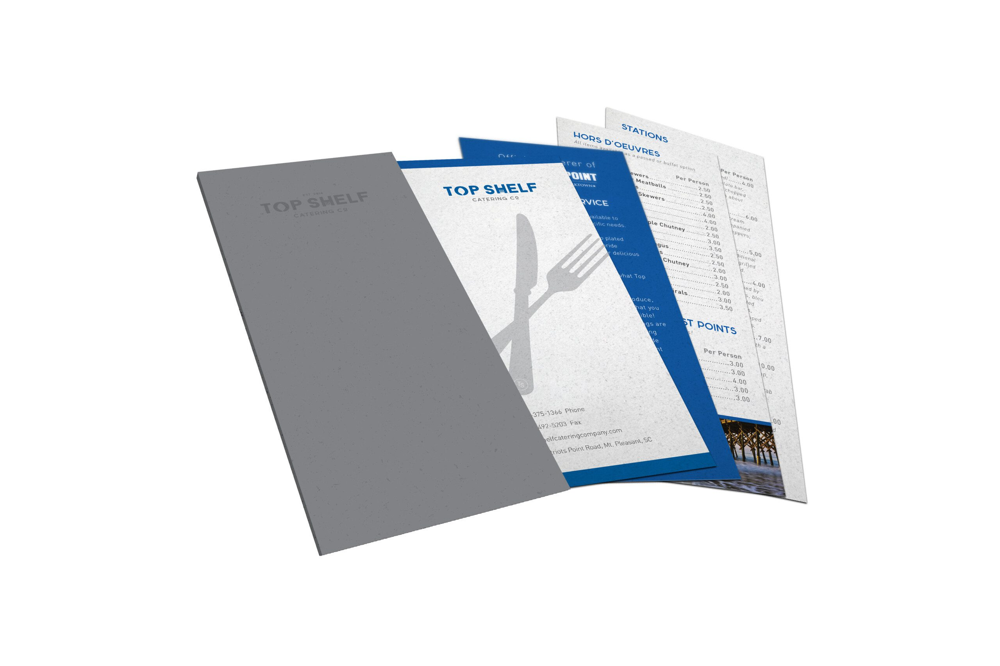
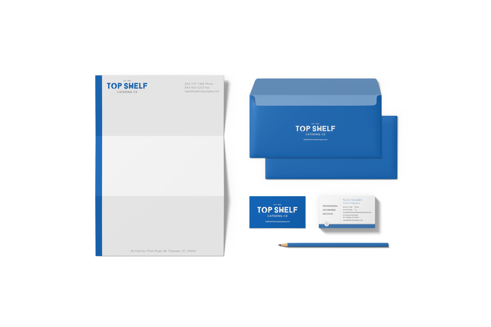
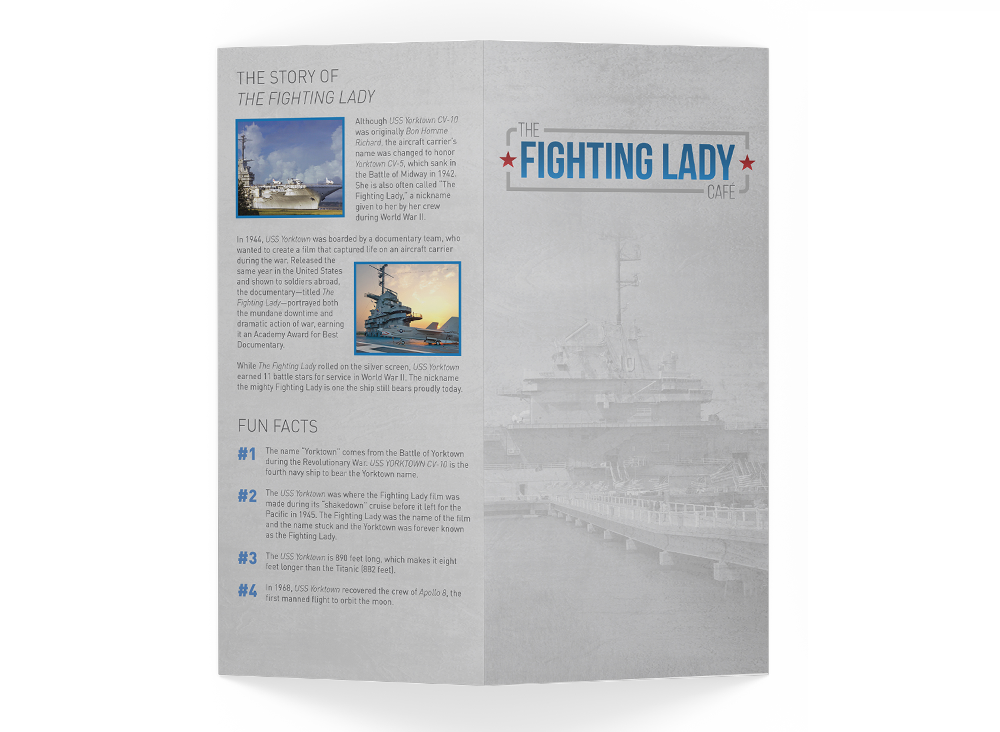
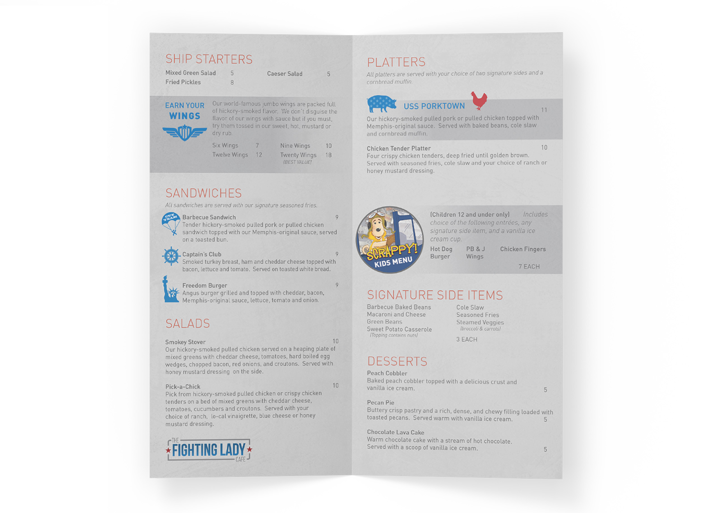
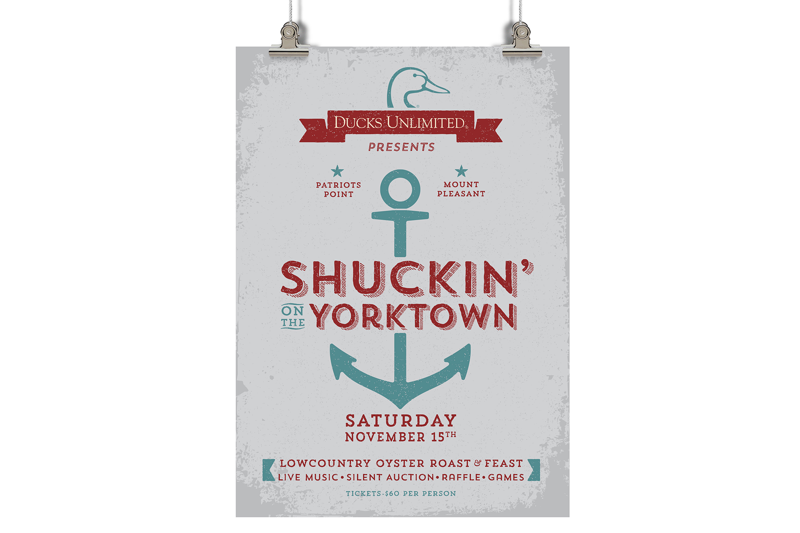
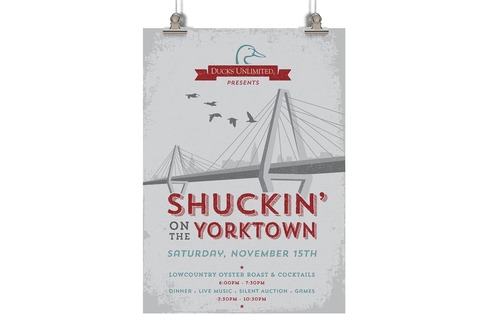

Top Shelf
Catering
Brand development, logo, UX/UI, e-commerce, and package design for a Lowcountry catering startup.

Brand development, logo, UX/UI, e-commerce, and package design for a Lowcountry catering startup.
Top Shelf Catering came to me as a concept and a name — nothing else. No brand, no logo, no website, no market position. They wanted to launch a catering company in the Lowcountry, a market saturated with established players, many with decades of client relationships and word-of-mouth momentum. A new entrant with no visual identity and no online presence doesn't get a second look.
The catering industry in Charleston runs on trust — people hand over their weddings, anniversaries, and milestone celebrations to you. That trust starts before the first phone call. It starts with how the brand looks, how the website feels, whether the menu design suggests someone who pays attention to details. Top Shelf had a real differentiator: five-star quality Lowcountry cuisine at a price point that doesn't require a second mortgage. But without a brand that communicated that balance — premium service, accessible pricing — they'd either get overlooked or attract the wrong clients.
I built everything from the ground up — brand positioning, logo system, full UX/UI for the website with e-commerce ordering, menu design, packaging, and print collateral. The visual language balances warmth and professionalism: clean enough to signal quality, approachable enough to signal "we'll work with your budget." The positioning anchors on one idea — everyone deserves to savor their special moments, regardless of what they can spend.
The result: a startup that launched looking like it had been in business for years. The brand system gave Top Shelf the credibility to compete immediately — and the business has been thriving since.









